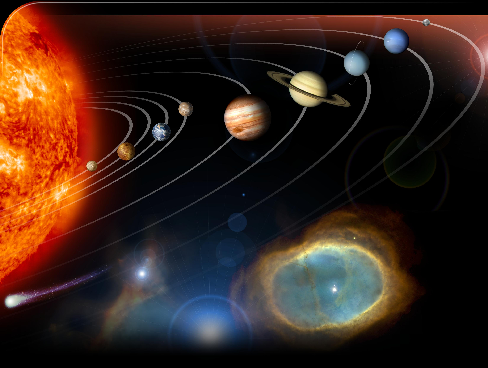

Sistema Solar
Formado por 8 planetas
Mercúrio, Vênus, Terra, Marte, Júpiter, Saturno, Urano e Netuno. Além dos planetas, há diversos corpos celestes que fazem parte do nosso sistema, como os satélites naturais, além de asteroides, cometas e meteoroides. Sistema este que podemos chamar de lar.
